Advanced Building Revue 08: Overflows II
It is quite a long time since the first article on overflows got introduced. As time passed by, I developed this topic towards the form of overflows we use now and I may mention something we haven’t used yet ;). This article is going to be about yet more overflows, this time much more advanced than the original ones. I recommend knowing the original article (ABR04) since this is just an addition to it.

Note:
Most overflows will not work without setting yapf.rail_firstred_twoway_eol = 1
for more info see relevant wiki page.
Introduction
Overflows are a sometimes-handy feature of our networks. When they are used, they can save us a lot of work. On the other hand they have (of course) their disadvantages. Let’s look into overflows in general, what are their effects on network behavior, and think about the fact whether it is good to build them or not, and when.
The purpose
Why do we build an overflow – our station tends to catch wave traffic and sometimes it just jams. The primal source of this are usually just jams on the network, making trains come in random intervals, randomizing also their required count to take all the cargo. So the first reaction on jammed station shouldn’t be to add an overflow, but unjam the network first.
In some cases it is possible that the station gets trains just randomly even when our network isn’t jamming at all. The perfect example are basically any conditional orders, where trains could jump to other orders, skipping/adding part of their journey, reaching random travel times. First thing that comes on my mind are refitting orders we used for example in psg 186.
The disadvantages
The very main disadvantage is – obviously – that we have a depot that is accessible. Some accidental click on “Send to depot” or “Send for servicing” could wreak havoc on our network. Another issue could emerge when trains stack up in the overflow, and then leave it all at once, creating a massive wave. (usually caused by a jam on the ML) As you will find out later in this article, these disadvantages can be rid of by using the correct designs.
Some people might also dislike that it kind of fakes the train count, by making some trains (even temporarily) useless. I would say, use overflows, but do not abuse them. Storing 50 trains is of course pointless.
Overflows as Puzzle
As usual, our mechanisms (overflows in this case) can do various things, thus have to be made of various sub-mechanisms, defining how it works in total. In overflows there quite a few parts in particular. I will just skip the abilities I have already mentioned in the ABR04, and focus more on the new parts.
There is a savegame available to be downloaded.(r21089)
1. Releasing trains
1.1. Releasing trains freely
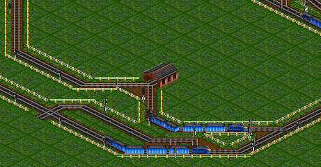
Trains released from the overflow can be released “just anytime”, mostly with giving way to the incoming line not to slow it down at least. This makes trains inject truly anytime the incoming line is able to accept them, although it has quite a few negative effects. First of all it is possible that trains could make a wave when they are released all at once. Secondly, releasing trains without knowing they will be useful makes many of them just loop around the station and get back into the overflow, which could critically increase the traffic on the overflow, possibly making it even jam. Note: it is always a good idea to make trains give way to the incoming line at least

1.2. Releasing trains by a timer
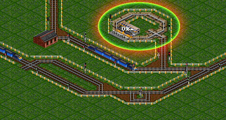
Once we release trains by a timer, allowing one train in a set time period, the overflow just can’t empty anyhow quickly, possibly disintegrating waves. The problem is, if a train gets into the overflow and it is immediately needed. It still has to wait for the right time to be used. As well as in the free release overflow, trains released could be just looping around uselessly if there is no free space for them, possibly stressing the overflow more, although this should be eliminated with higher time when setting the period. This issue can be totally eliminated by merging timed overflow with releasing on demand (see later in the article). The main advantage of the timer is that when a major jam occurs on the ML and the station gets badly serviced, the overflow doesn’t flood it with trains and eventually make the ML jam even worse (or at least the process is slower). Some people might dislike the fact that we use some logic train here.
There are a few timers to use:

Both conditions
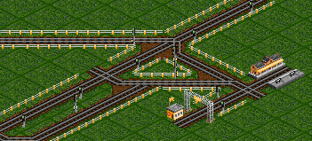
We can either release trains only when there is the releaser signal green, and at the same time the timer lets it go. I do not recommend this since it doesn’t really do anything good and it only drastically reduces the chance for trains to be released.

Single condition
By connecting the timer first, trains are released every timer period, and then wait until they can join. This makes the timer work, and at the same time makes the release reasonably possible. To this apply the following two possibilities.
Separate timer
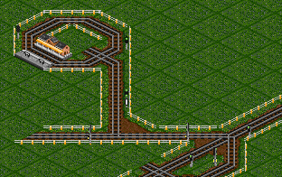
If we just make the timer aside, not looking at the trains, it could easily happen that the train passes the timer, then waits for releaser signal to go into the station, but it waits for a long time, for example almost 1 timer period. Then it leaves the overflow, and another train comes, being released by the timer instantly. Therefore the trains can come in groups of 2.

Detecting timer
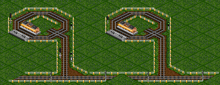
The other option is to make the timer wait until the train is released into the station, therefore making every two trains come separate in our desired intervals (timer period).

1.3. Releasing trains on demand
By checking if the trains will actually be useful (checking for empty platforms and/or buffering spaces), we can easily release trains only when there is a need and therefore stress the overflow by the smallest amount. Of course that directly influences also the main downside. Once trains get into the overflow, they can have a very hard time getting out of it since they usually have quite a few other conditions under which they are released.
Additional Release Conditions
Free platform detection
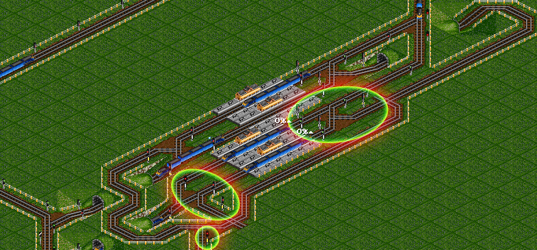
When we check for free platforms, we can easily detect if the released train is going to be anyhow useful or not. Although it is possible that it fails, most likely because there is an another train on the way towards that platform already (either in a buffering space or on the incoming line), so it is essential to use also some detection for those.

Trains attempting to join detection
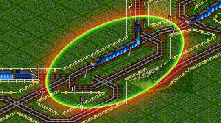
When our released train also looks whether there aren’t any of its fellows attempting to join a platform already, it is almost sure that he won’t be released without an actual use. Although this condition can slow the injection quite a lot, making it hard for trains to get out of the overflow, it should slow it too much only when the station incoming lines are at a limit and can’t support the train count coming in. This mainly applies to long arrays from which the trains split into the platforms. If we shorten these by putting the platforms together, we can make it faster.

Waiting bay detection
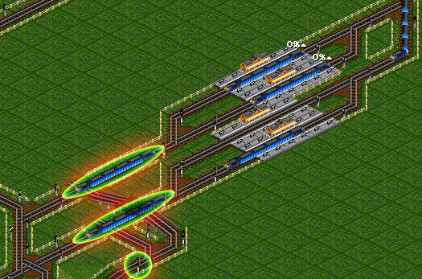
When we have a station where one train leaves the platform, it is expected that also one waiting bay gets freed. If the freed waiting bay is able to accept the released train, we don’t need any detection for the waiting bay, since it would only slow the releaser down without any actual purpose.
If the waiting bay doesn’t empty quickly enough to accept the train though, the released train could end up being uselessly looping around. In that case I would recommend using the waiting bay detection, but I haven’t experienced such case yet.

2. Multiline friendliness
Some overflow designs are reasonably usable only with one incoming line. Because it is quite bad to have two separate overflows, it is important to note whether our overflows are going to be able to expand to more than one incoming line.
Having two separate depots would mean that one could get full, where the other could be empty. They should either have both access to all of the station incoming lines, or be merged into one to eliminate this possible flaw.
Also, for example directly connected platforms of the station require fail-safe mechanisms which could make the station exponentially larger, therefore it can’t really be considered as multiline-friendly since a direct connection of just 1 line is much simpler.
3. Other Features
3.1. Conditional-conditional depot
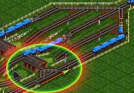
Another thing to consider is not forcing all trains to go through the depot even when they could go directly to their respective waiting bay, making things faster.
This could possibly be even improved by making trains in the depot give way to the incoming trains towards the depot. Although it could make the depot trains wait there for longer times.

3.1. Unreal depot
Once the depot isn’t pathfinder available for trains from the main line, we officially don’t have the depot. This could solve one of the issues “why not to have an overflow” since when we press “send trains to depot”, we want to get a red message “Unable to find route to local depot.”. 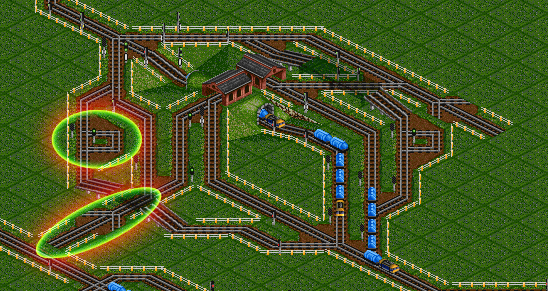
This can be reached quite easily by making a train reverser in front of the depot, so the depot does not exist for the pathfinder. And to make trains go into the train reversers and depots, eventually, we just use a PF trap that goes from the reverser entrance to a route to our station, not making the depot PF visible through the trap. In most cases it is also required to add the little pieces of rails which make the 2way eol in PF traps work. (Trains there work just as lost/orderless trains !)
I STRONGLY recommend using this ALWAYS since it makes the depots basically not exist, thus eliminating some of their disadvantages.
Note: I used double depots in the examples to stress them a bit more, although it should be enough to use just one in normal cases. 🙂

4. Other Overflows and features
4.1 Looparound overflow
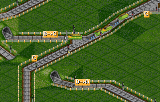
This is an overflow without depot, but making trains swap lines. For example, we have a 3 line station. Our train fails to join at line 1 platforms, then it attempts to join at line2, later line 3 and then returns back to 1. This makes trains also some kind of balance over all of the platforms even when we are using only unbalanced station entrances. Also viable for drops that let trains in when all platforms are full!

4.2 Depot-less overflow
Once we fear having a depot too much and can not get rid of it, it is possible to have an overflow without a depot. One problem emerges though – possible gridlock, if not built properly and taken care of.
4.3 Escape for lost trains
Another issue that can occur is that trains that get lost somewhere on the network (mainly because of some rebuilding etc.) sometime end in the overflow they don’t belong to. This can result in an endless cycle, where the train can’t leave the overflow loop without being helped.
A solution to this is making an escape path which would allow these trains a free exit from the overflow, but at the same it can’t provide a sympathic reverser for lost trains on ML, and also, the mechanism mustn’t influence/disturb the way how the overflow itself works.
Conclusion
Overflows are something that one can have a lot of fun with. Especially since it can consist of so many “details” and ways how it works! That is also one of the reasons why it would be way too long if I wanted to describe every little deviation. This article should have pointed at all (currently known) puzzle-parts that an overflow can have and that influence it’s way of working. Although their usage should be limited only to the necessary amount since they could take too much space and be hardly expandable in compare with normal pickups. I hope you enjoyed this article, that it helped you in any way, and thank you for reading.
Categories: Community News, Gameplay, Tutorial